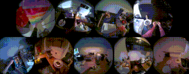
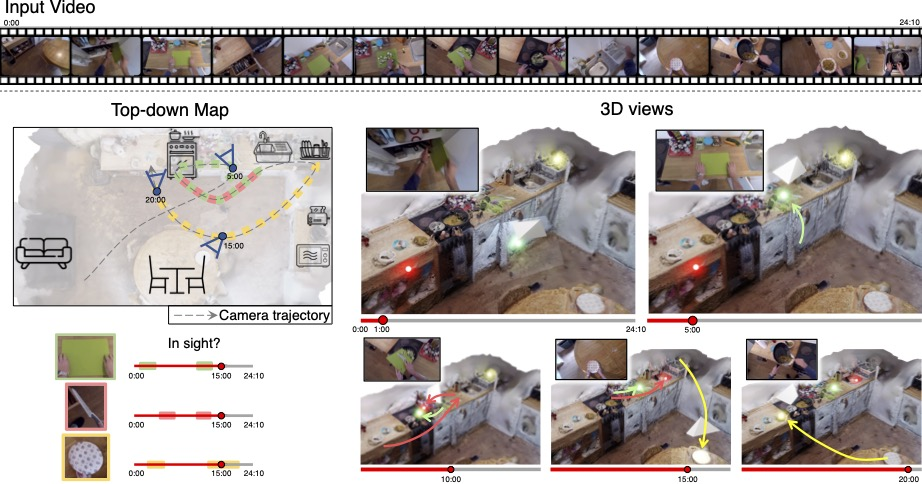
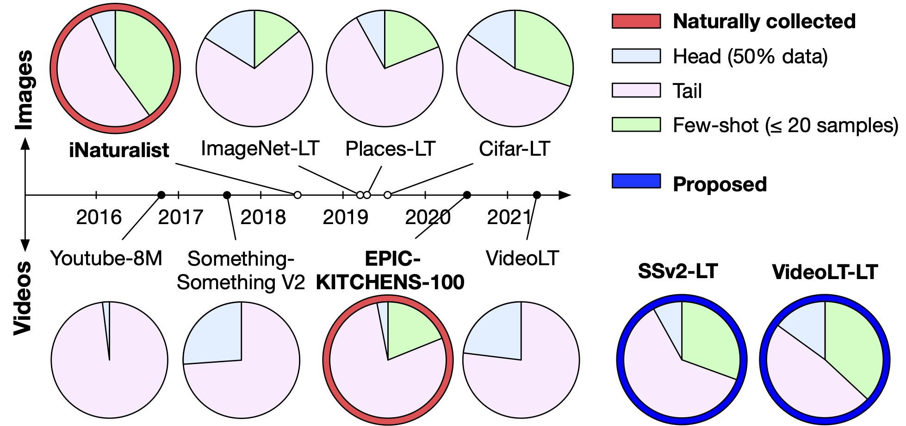
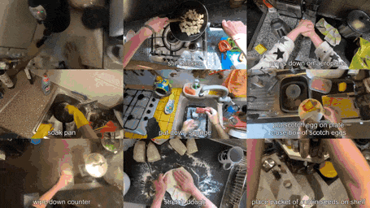
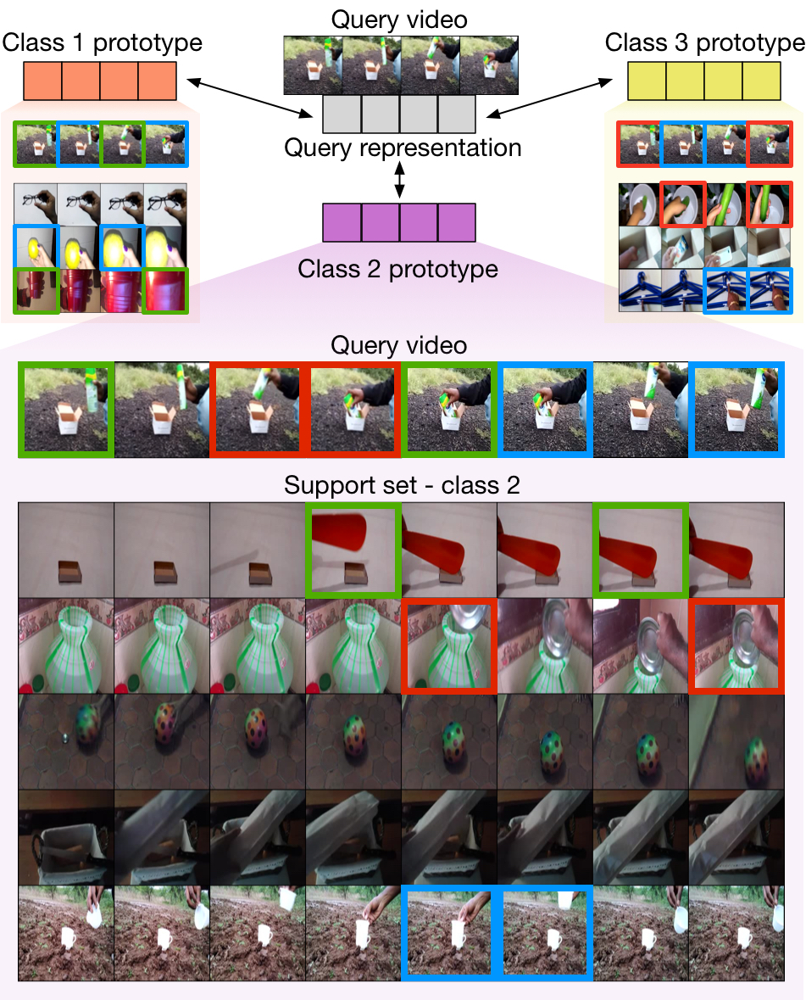
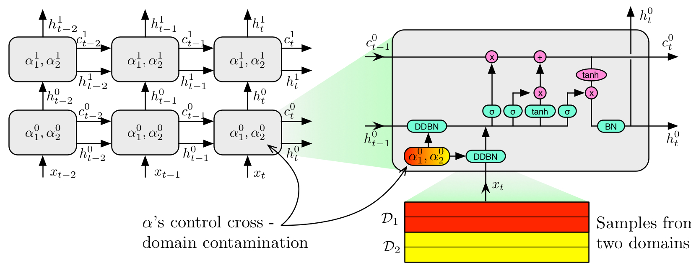

Toby Perrett
Hi! I'm a Senior Research Engineer at Autodesk. Prior to that, I did my postdoc at the University of Bristol, working with Professor Dima Damen, and co-advising Chiara Plizzari and Saptarshi Sinha. I'm a founding member of the team collecting the EPIC Kitchens datasets, and also worked on the Visual AI project led by Professor Andrew Zisserman.
My research interests include datasets, benchmarks and methods for Egocentric video, Captioning, 3D understanding and CAD. I'm also interested in improving models when labelled data is scarce or imbalanced.
News
- Apr 2026 neuralCAD-Edit: An Expert Benchmark for Multimodal-Instructed 3D CAD Editing is released and on arxiv!
- Jan 2026 It's Just Another Day: Unique Captioning by Discriminative Prompting has been accepted in IJCV!
- Jun 2025 It's Just Another Day: Unique Captioning by Discriminative Prompting has received the EgoVis Distinguished Paper Award, announced at CVPR 2025.
- Mar 2025 I've just joined Autodesk as a Senior Research Engineer!
- Mar 2025 HD-EPIC: A Highly Detailed Egocentric Video Dataset has been accepted at CVPR 2025!
- Feb 2025 HD-EPIC: A Highly Detailed Egocentric Video Dataset is released and on arxiv!
- Dec 2024 Received the ACCV Best Paper Award for It's Just Another Day: Unique Captioning by Discriminative Prompting!
- Nov 2024 Spatial Cognition from Egocentric Video: Out of Sight, Not Out of Mind has been accepted at 3DV 2025!
- Oct 2024 Paper accepted at ACCV 2024 as an oral presentation (top 5%)! It's Just Another Day: Unique Captioning by Discriminative Prompting. Code, benchmarks and models available.
- Jun 2024 I'll be serving as an Area Chair for NeurIPS 2024, on the Datasets and Benchmarks track.
- May 2024 I was an Outstanding Reviewer at CVPR 2024!
- Apr 2024 New paper on arXiv: Spatial Cognition from Egocentric Video: Out of Sight, Not Out of Mind. Video. PDF.
- Sep 2023 I was an Outstanding Reviewer at ICCV 2023!
- Sep 2023 I gave a talk at the JADE (UK Supercomputing Facility) 2023 event on egocentric vision and computational requirements.
- Jul 2023 Paper accepted at ICCV 2023! What can a cook in Italy teach a mechanic in India? Action Recognition Generalisation Over Scenarios and Locations.
- May 2023 I gave a talk at Samsung AI Centre Cambridge on scaling few-shot models to handle long-tail tasks.
- Feb 2023 I gave a talk at the University of Exeter Computer Science Seminar Series on image/video datasets, model shortcuts, and recent solutions.
- Feb 2023 Paper accepted at CVPR 2023! Use Your Head: Improving Long-Tail Video Recognition. Code, benchmarks and models available.
- Jan 2023 I gave a talk at the Visual AI group at the University of Oxford on our latest long-tail video work.
Selected Publications
See all →-
 neuralCAD-Edit: An Expert Benchmark for Multimodal-Instructed 3D CAD Model EditingarXiv, 2026
neuralCAD-Edit: An Expert Benchmark for Multimodal-Instructed 3D CAD Model EditingarXiv, 2026 -
It's Just Another Day: Unique Captioning by Discriminative PromptingIJCV, 2026 · ACCV 2024 Best Paper Award · EgoVis Distinguished Paper Award
-

-

-

-

Rescaling Egocentric Vision: Collection, Pipeline and Challenges for EPIC-KITCHENS-100IJCV, 2022 -

-

Full Bibliography
2026
-
neuralCAD-Edit: An Expert Benchmark for Multimodal-Instructed 3D CAD Model Editing
-
It's Just Another Day: Unique Captioning by Discriminative Prompting
2025
-
HD-EPIC: A Highly-Detailed Egocentric Video Dataset
-
Spatial Cognition from Egocentric Video: Out of Sight, Not Out of Mind
2024
-
It's Just Another Day: Unique Captioning by Discriminative Prompting
2023
-
Use Your Head: Improving Long-Tail Video Recognition
-
What can a cook in Italy teach a mechanic in India? Action Recognition Generalisation Over Scenarios and Locations
-
Centre Stage: Centricity-based Audio-Visual Temporal Action Detection
2022
-
Rescaling Egocentric Vision: Collection, Pipeline and Challenges for EPIC-KITCHENS-100
-
Personalized Energy Expenditure Estimation: Visual Sensing Approach With Deep Learning
-
An Evaluation of OCR on Egocentric Data
-
Refining Action Boundaries for One-Stage Detection
2021
-
Temporal-Relational CrossTransformers for Few-Shot Action Recognition
-
The EPIC-KITCHENS Dataset: Collection, Challenges and Baselines
2020
-
Meta-Learning with Context-Agnostic Initialisations
2019
-
DDLSTM: Dual-Domain LSTM for Cross-Domain Action Recognition
2018
-
Scaling Egocentric Vision: The EPIC-KITCHENS Dataset
2017
-
Detection of Valuable Left-Behind Items in Vehicle Cabins